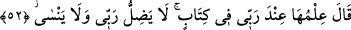

kahır ve rüsvaylığı kabûle, peygamberlere karşı koyma ve isyanı kabûle istîdadlı olarak
yaratılmıştır.
Mağribî (k.s.) şöyle der:
Birisi ibâdet ve tâât için yaratıldı
Diğeri de isyan için var edildi
Birisi Mâlik[82] için mevcud oldu
Diğeri Rıdvan için yaratıldı
51. Fir’avn: “Öyle ise, önceki milletlerin hali ne olacak?” dedi.
Fir’avn: “Öyle ise, önceki milletlerin hâli ne olacak?” dedi.” Âyette geçen “__WORD__”
kelimesi, ise dikkat edilen, önem verilen durum demektir. Bu kelime ile insanı kaplayan
durum ifade edilir. “__WORD__, aynı zamanda yaşamış insan topluluğu demektir. Yâni geçmiş
milletlerin durumu nedir? Nûh, Âd ve Semûd kavmi gibi geçmiş ümmetlerin haberi
nedir? Onların başına gelen olaylar nedir?
el-Es’iletü’l-mukhime’de şöyle der: Eğer “Fir’avn’un bu sorusu önceki âyetlerle
uyuşmuyor” dersen, şöyle cevap veririz: Mûsâ (a.s.) ona “Eğer bana îmân etmezseniz
önceki kavimlerin başına gelen belaların sizin de başınıza gelmesinden korkarım” (bk.
el-Mü’min, 40/28-31) demişti. Bu sebeple Fir’avn onların durumunu sordu.
Fakir (Bursevî) der ki: Her ne kadar âyete göre bu mânâ uygun görünse de verilen
cevap bunu desteklememektedir. Aynı zamanda (Mü’min sûresindeki âyette) “korkarım”
diye söyleyen Mûsâ (a.s.) değil, (Fir’avn’un âilesinden olup da) îman eden kimsedir.
Siyak ve sibakın uygun olmaması sebebiyle “îman eden kimse”nin Mûsâ (a.s.) diye
tefsir edilmesi de mümkün değildir. Daha geniş bilgi için Mü’min süresine bakınız!
Bazı âlimler der ki: “Fir’avn delilleri ve açıklamaları işitince, eğer Mûsâ (a.s.)
delilleri artırırsa kavmi işin hakikatini anlar ve ona îman eder diye konuyu değiştirmek
ve saptırmak için bu soruyu sormuştur. Mûsâ (a.s.) kendini hikâye anlatarak meşgul
etmek isteyen Fir’avn’un bu tuzağına düşmemiş ve şöyle demiştir:
52. Mûsâ: “Onlar hakkındaki bilgi, Rabbimin yanında bir kitapta bulunur.
Rabbim, ne yanılır ne de unutur.” dedi.
“Mûsâ: “Onlar hakkındaki bilgi, Rabbimin yanında bir kitapta bulunur.” Yani bu